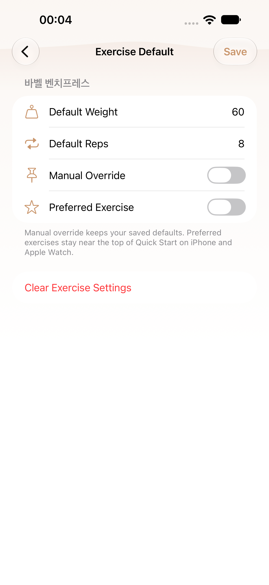
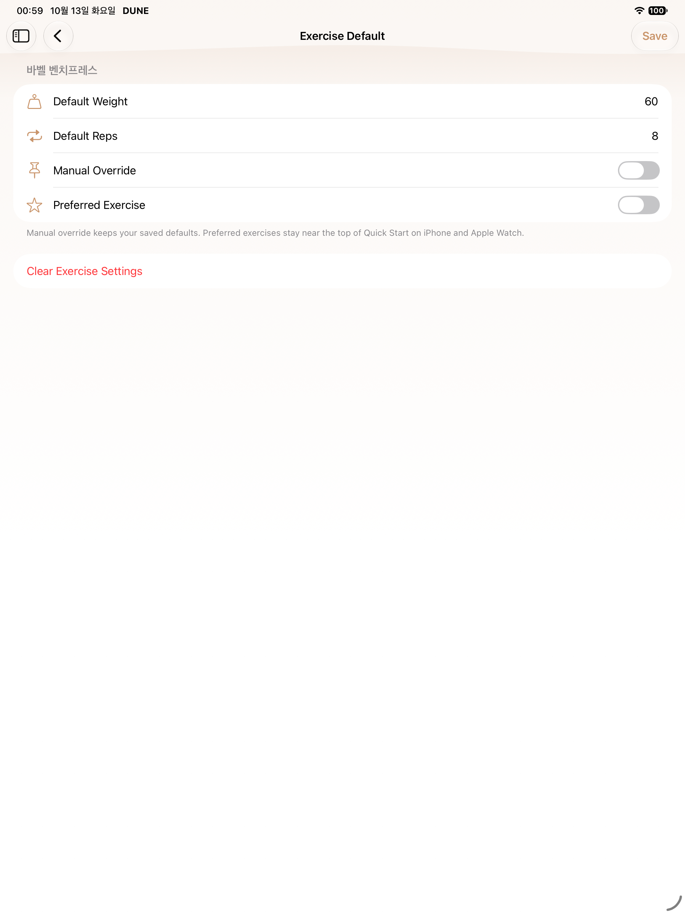
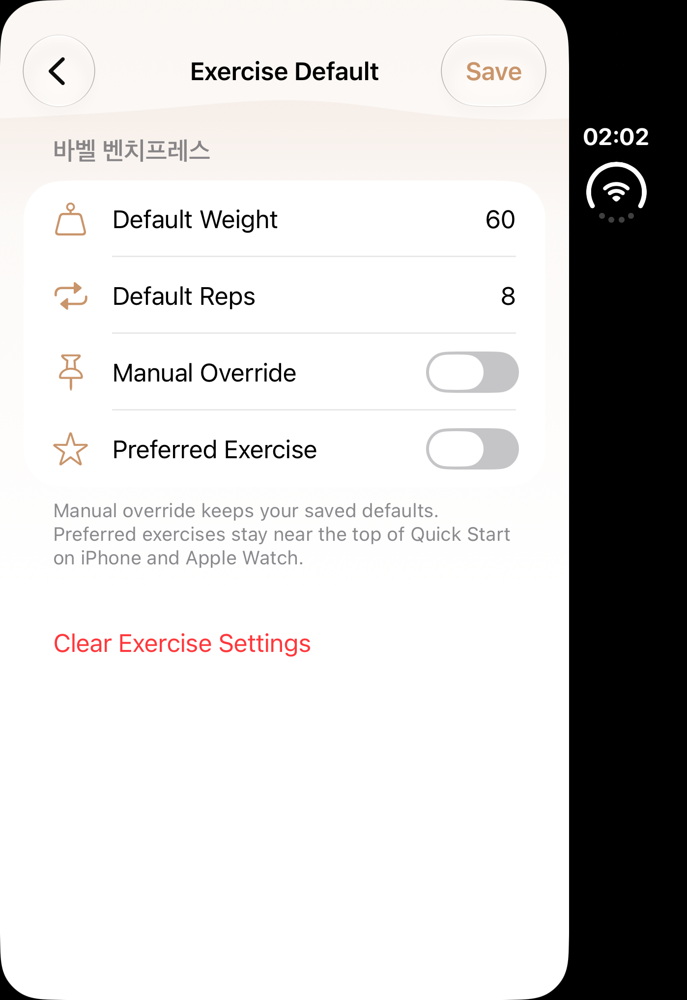
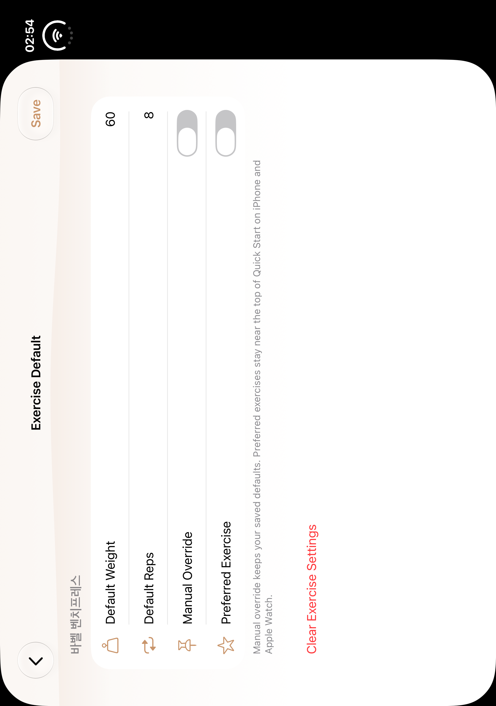
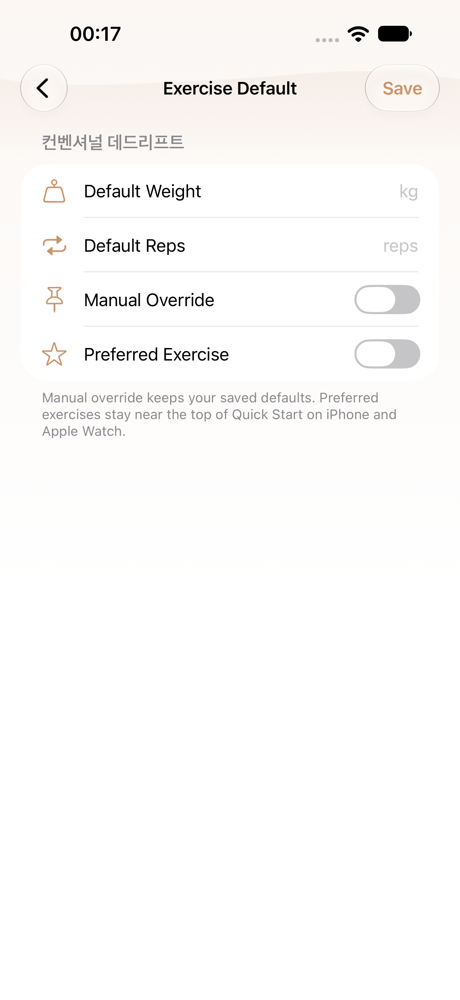
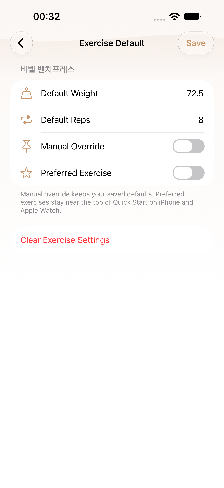
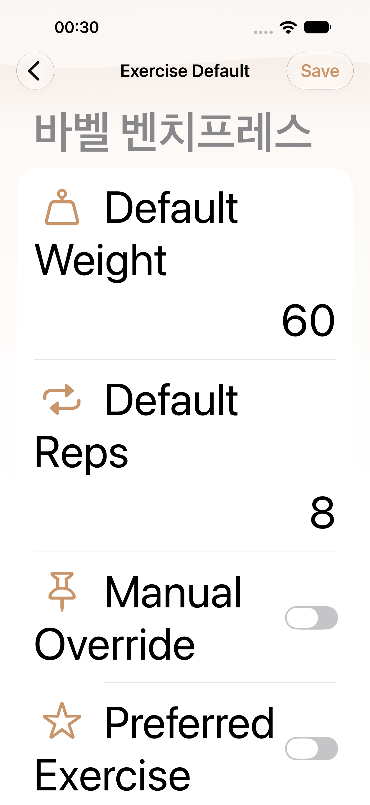
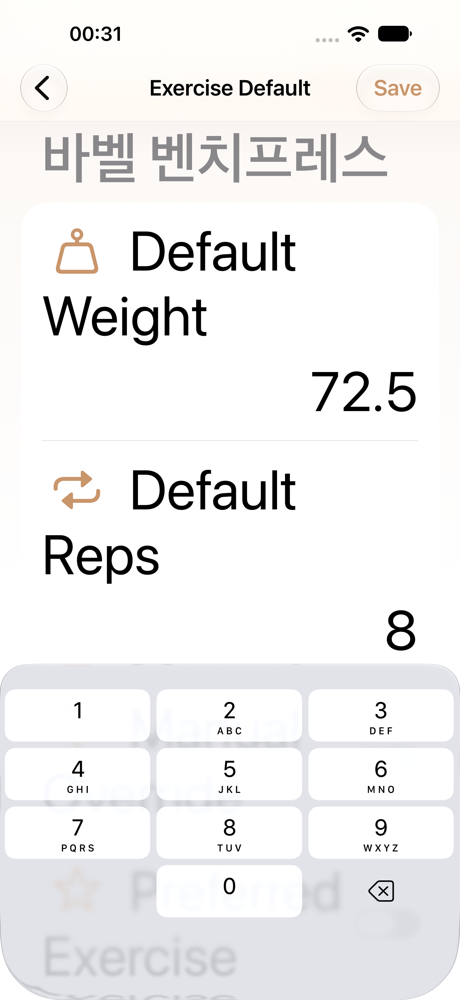
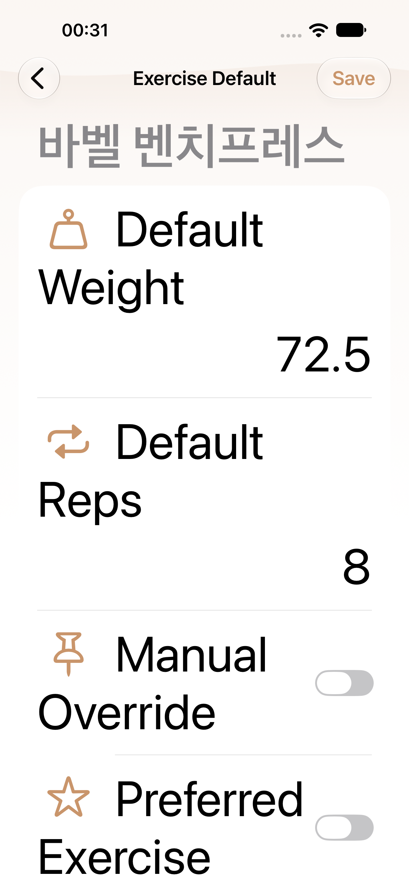

S03 · B07 native gallery
Selected native PNG/AX pairs. Historical before captures and diagnostics are separate; source/test/count limits are in manifest.
Pending or limited- phone-first Current stored values on reopen: capture absent or selector not executed; Completed mixed result; only nonfailed requested selectors attributed
- phone-first MAX weight label and field: capture absent or selector not executed; Completed mixed result; only nonfailed requested selectors attributed
- phone-first MAX reps label and field: capture absent or selector not executed; Completed mixed result; only nonfailed requested selectors attributed
- phone-first MAX edited values and Save: capture absent or selector not executed; Completed mixed result; only nonfailed requested selectors attributed
- phone-first MAX saved values on reopen: capture absent or selector not executed; Completed mixed result; only nonfailed requested selectors attributed
- phone-retry1 Editor opened from S02 search: capture absent or selector not executed; Completed mixed result; only nonfailed requested selectors attributed
- ipad-first Current stored values on reopen: capture absent or selector not executed; Completed mixed result; only nonfailed requested selectors attributed
- ipad-first MAX weight label and field: capture absent or selector not executed; Completed mixed result; only nonfailed requested selectors attributed
- ipad-first MAX reps label and field: capture absent or selector not executed; Completed mixed result; only nonfailed requested selectors attributed
- ipad-first MAX edited values and Save: capture absent or selector not executed; Completed mixed result; only nonfailed requested selectors attributed
- ipad-first MAX saved values on reopen: capture absent or selector not executed; Completed mixed result; only nonfailed requested selectors attributed
- ipad-retry1 Current stored values on reopen: capture absent or selector not executed; Completed mixed result; only nonfailed requested selectors attributed
- ipad-retry1 MAX weight label and field: capture absent or selector not executed; Completed mixed result; only nonfailed requested selectors attributed
- ipad-retry1 MAX reps label and field: capture absent or selector not executed; Completed mixed result; only nonfailed requested selectors attributed
- ipad-retry1 MAX edited values and Save: capture absent or selector not executed; Completed mixed result; only nonfailed requested selectors attributed
- ipad-retry1 MAX saved values on reopen: capture absent or selector not executed; Completed mixed result; only nonfailed requested selectors attributed
- Duo closed and open have no B07 current-source provider/capture; historical before only
- Normal Save/reopen selector failed on phone and iPad; editor opening and MAX Save/reopen are separately evidenced
- Maximum Dynamic Type completion is represented only by explicit passed MAX selectors; failed-selector MAX frames are diagnostic

regular · before
Historical S03 baseline
443a32ca4fe8

ipad · before
Historical S03 baseline
443a32ca4fe8

duo · before
Historical S03 baseline
443a32ca4fe8

duo-open · before
Historical S03 baseline
443a32ca4fe8

regular · after
Editor opened from S02 search
2930ba45dd41
AX tree
regular · diagnostic
Current stored values on reopen (failed selector; diagnostic)
47feceb7b4d6
AX tree regular · after
regular · after
MAX weight label and field
47feceb7b4d6
AX tree
regular · after
MAX reps label and field
47feceb7b4d6
AX tree
regular · after
MAX edited values and Save
47feceb7b4d6
AX tree
regular · after
MAX saved values on reopen
47feceb7b4d6
AX treeipad · after
Editor opened from S02 search
23c6d0948808
AX treeipad · after
Editor opened from S02 search
1c1b4bf26f6c
AX tree